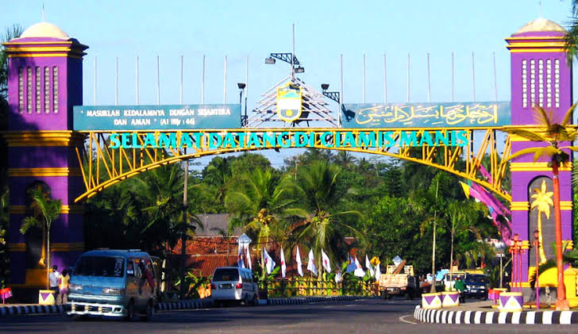
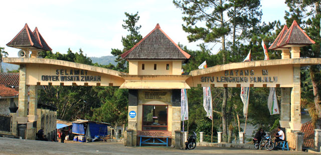
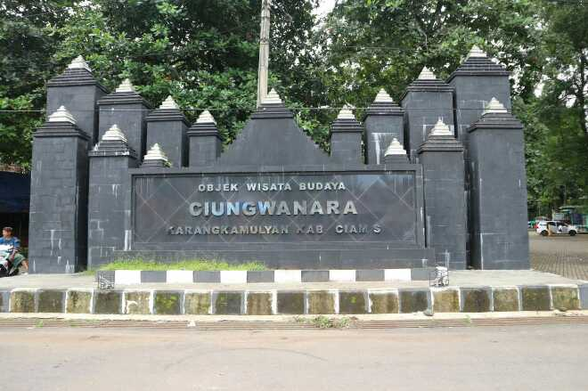

Sejarah

Proses lahirnya hari jadi Kabupaten Ciams, diawali dengan keluarnya
Surat Keputusan Dewan Perwakilan Rakyat Daerah Kabupaten Ciamis
Tanggal 6 Oktober 1970 Nomor: 36/X/KPTS/DPRD/1970 DAN NOMOR :
5/ll/KPTS/DPRD/1971, tentang pembentukan panitia penyusunan sejarah
galuh, yang dalam pelaksaannya panitia tersebut didampingi oleh tim
ahli sejarah Ikip Bandung, yang dipimpin oleh DRS. RD.H.Said
Raksanegara.
Menurut sejarawan W.J Van der Meulen, Pusat Asli Daerah (kerajaan)
Galuh, yaitu disekitar Kawali (Kabupaten Ciamis sekarang).
Selanjutnya W.J Van der Meulen berpendapat bahwa kata “galuh”,
berasal dari kata “sakaloh” berarti “dari sungai asalnya”, dan dalam
lidah Banyumas menjadi “segaluh”. Dalam Bahasa Sansekerta, kata
“galuh” menunjukkan sejenis batu permata, dan juga biasa
dipergunakan untuk menyebut puteri raja (yang sedang memerintah) dan
belum menikah.
Sebagaimana riwayat kota-kabupaten lain di Jawa Barat, sumber-sumber
yang menceritakan asal usul suatu daerah pada umumnya tergolong
historiografi tradisional yang mengandung unsur-unsur mitos, dongeng
atau legenda disamping unsur yang bersifat historis. Naskah-naskah
ini antara lain Carios Wiwitan Raja-raja di Pulo Jawa, Wawacan
Sajarah Galuh, dan juga naskah Sejarah Galuh bareng Galunggung,
Ciung Wanara, Carita Waruga Guru, Sajarah Bogor. Naskah-naskah ini
umumnya ditulis pada abad ke-18 hingga abad ke-19. Adapula
naskah-naskah yang sezaman atau lebih mendekati zaman Kerajaan
Galuh. Naskah-naskah tersebut, diantaranya Sanghyang Siksakanda ‘Ng
Karesian, ditulis tahun 1518, ketika Kerajaan Sunda masih ada dan
Carita Parahyangan, ditulis tahun 1580.
Geografis
Ciamis sebagai salah satu provinsi di Jawa Barat, letaknya di
sebelah Utara berbatasan dengan Kabupaten Majalengka dan Kabupaten
Kuningan, sebelah Barat dengan Kabupaten Tasikmalaya dan Kota
Tasikmalaya, sebelah Timur dengan Kota Banjar dan Propinsi Jawa
Tengah, dan sebelah Selatan dengan Samudera Indonesia. Berdasarkan
letak geogerafisnya Kabupaten Ciamis berada pada posisi strategis
yang dilalui jalan Nasional lintas Provinsi Jawa Barat Provinsi Jawa
Tengah dan jalan Provinsi lintas Ciamis – Cirebon – Jawa Tengah.
Letak astronomisnya berada pada 108°20’ sampai dengan 108°40’ Bujur
Timur dan 7°40’20” sampai dengan 7°41’20’’ Lintang Selatan. Luas
wilayah Ciamis sebesar 2.556,75 km2.
Sebagian besar wilayah Kabupaten Ciamis berupa pegunungan dan
dataran tinggi, kecuali di perbatasan dengan Jawa Tengah bagian
selatan. Semenjak ada pemekaran Kabupaten Pangandaran, maka saat ini
wilayah Kabupaten Ciamsi tidak memiliki pesisir pantai.
Wisata
Lokasi Ciamis memang sangat strategis karena berada pada jalur
antara Provinsi Jawa Barat dan Jawa Tengah. Untuk itulah berbagai
tempat wisata di Ciamis biasanya selalu ramai dikunjungi wisatawan
baik yang berasal dari wilayah Jawa Barat maupun Jawa Tengah.
Situ Lengkong Panjalu

Situ Lengkong Panjalu adalah sebuah danau yang terletak di
Kecamatan Panjalu, Ciamis. Konon, di kawasan Situ Lengkong itulah
dahulunya menjadi pusat pemerintahan Kerajaan Panjalu Ciamis.
Dengan adanya penermuan-penemuan sejarah itu, maka Panjalu
berkembang sebagai kota daerah wisata, baik wisata alam, wisata
budaya maupun sebagai wisata ziarah. Pentingnya daerah Panjalu
sebagai cikal bakal kerajaan Sunda Kawali, maka Pemerintah
Provinsi Jawa Barat, pada tanggal 17 Maret tahun 2004 mengukuhkan
panjalu sebagai desa wisata.
Ciung Wanara

Ciung Wanara adalah sebuah situs purba yang mempunyai ciri khas
Hindu dan Budha. Konon tempat wisata sejarah ini adalah
peninggalan kerajaan Galuh, yang konon juga menjadi nenek moyang
penduduk di wilayah Ciamis ini. Selain Ciung Wanara, obyek wisata
ciamis jawa barat ini juga menyimpan peninggalan-peninggalan
purbakala yang lain. Tempat wisata Ciung Wanara di Ciamis ini
mempunyai area seluas 25 hektar. Situs tempat wisata sejarah di
Ciamis ini layak untuk anda kunjungi.